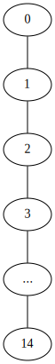
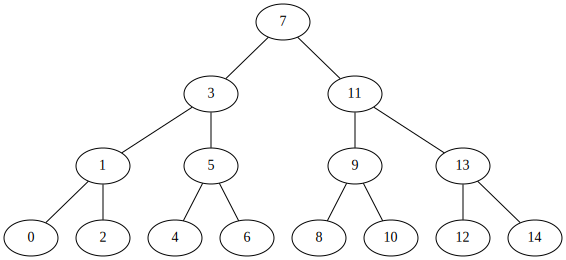
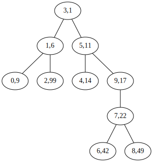

Random Binary Search Trees
In this chapter, we present a binary search tree structure that uses
randomization to achieve O(log n) expected time for all operations.
Random Binary Search Trees
Consider the two binary search trees shown in Figure X, each of which has n=15
nodes. The one on the left is a list and the other is a perfectly balanced
binary search tree. The one on the left has a neight of n - 1 = 14 and the one
on the right has a height of three.


Imagine how these two trees could have been constructed. The one on the left occurs if we start with an empty binary search tree and add the sequence
<0, 1, 2, 3, 4, 5, 6, 7, 8, 9, 10, 11, 12, 13, 14>
No other sequence of additions will create this tree (as you can prove by
induction on n). On the other hand, the tree on the right can be created by
the sequence
<7, 3, 11, 1, 5, 9, 13, 0, 2, 4, 6, 8, 10, 12, 14>
Other sequences work as well, including
<7, 3, 1, 5, 0, 2, 4, 6, 11, 9, 13, 8, 10, 12, 14>
and
<7, 3, 1, 11, 5, 0, 2, 4, 6, 9, 13, 8, 10, 12, 14>
In fact, there are 21,964,800 addition sequences that generate the tree on the right and only one that generates the tree on the left. The above example gives some anecdotal evidence that, if we choose a random permutation of 0,…,14 and add it into a binary search tree, then we are more likely to get a very balanced tree than we are to get a very unbalanced tree.
We can formalize this notion by studying random binary search trees. A random
binary search tree of size n is obtained in the following way: Take ka random
permutation x_0,...,x_n-1 of the integers 0,...,n-1 and addd its elements,
one by one, into a binary search tree. By random permutation we mean that each
of the possible n! permutations (orderings) of 0,...,n-1 is equally likely,
so that the probability of obtaining any particular permutation is 1/n!.
Note that the values 0,...,n-1 could be replaced by any ordered set of n
elements without changing any of the properties of the random binary search
tree. The element \(x \in {0,...,n-1} x\) is simply stanidng in for the element
of rank x in an ordered set of size n.
Before we can present our main result about binary search trees, we must take
some time for a short digression to discuss a type of number that comes up
frequently when studing randomized structures. For a non-negative integer k,
the k-th harmonic number, denoted H_k, is defined as
\[H_k = 1 + 1/2 + 1/3 + ... + 1/k\]
The harmonic number H_k has no si ple closed form, but it is very closely
related to the natrual logarithm of k. In particular,
\[ln(k) < H_k <= ln(k) + 1\]
Readers who have studied calculus might notice that this is because the
integral TODO. Keeping in mind that an integral can be interpreted as the area
abetween a curve and the x-axis, the value of H_k, can be lower-bounded by the
integral TODO and upper bounded by TODO.
TODO rest of this section when I feel like it.
Treap: A Randomized Binary Search Tree
The problem with random binary search trees is, of course, that they are not
dynamic. They don’t support the (add x) or (remove x) operations needed to
implement the SSet interface. In this section we describe a data structure
called a treap that uses lemma TODO to implement the interface.
A Node in a treap is like a node in a binary-search-tree in that it has a
data value x, but also contains a unique numerical property p that is
assigned at random.
(defclass treap-node (binary-tree-node) ((p :initarg :p :accessor p)))
In addition to being a binary search tree, the nodes in a treap also obey the heap property:
(Heap Property) At every node
u, except the root,(parent (p u)) < (p u)
In other words, each node has a priority smaller than that of its two children. An example is shown in figure X:

The heap and binary search tree properties ensure that once the key and priority
are defined for each node, the shape of the treap is completely determined. The
heap property tells us that the node with the minimum priority has to be the
root of the treap. The binary search tree property tells us that all nodes with
keys smaller than (r x) are stored in the subtree rooted at (left r) and all
nodes with keys larger than (r x) are stored in the subtree rooted at (right
r).
The important point about priority values in a treap is that they are unique and
assigned at random. Because of this, there are two equivalent ways we can think
about a treap. As defined above, the treap obeys the heap and binary search tree
properties. Alternatively, we can think of a treap as a binary search tree whose
nodes were added in increasing order of priority. For example, the treap in
figure X can be obtained by adding the following sequence (x, p) values into
a binary search tree:
<(3,1), (1,6), (0,9), (5,11), (4,14), (9,17), (7,22), (6,42), (8,49), (2,99)>